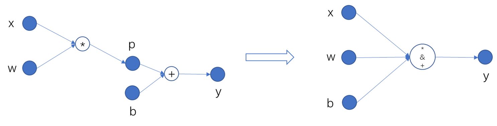

将动态图转为静态图¶
MegEngine 默认使用 动态计算图 ，其核心特点是计算图的构建和计算同时发生（Define by run）。
在计算图中定义一个
Tensor时，其值就已经被计算且确定了。这种模式在调试模型时较为方便，能够实时得到中间结果的值。
但是由于所有节点都需要被保存，这就导致我们难以对整个计算图进行优化。
MegEngine 也支持 静态计算图 模式，将计算图的构建和实际计算分开（Define and run）。
在构建阶段，MegEngine 根据完整的计算流程对原始的计算图进行优化和调整， 得到更省内存和计算量更少的计算图，这个过程称之为 “编译” 。编译之后图的结构不再改变，也就是所谓的 “静态” 。
在计算阶段，MegEngine 根据输入数据执行编译好的计算图得到计算结果。
静态图相比起动态图，对全局的信息掌握更丰富，可做的优化也会更多。
但中间过程对于用户来说是个黑盒，无法像动态图一样随时拿到中间计算结果。
注解
一般的模型训练中，我们推荐使用动态图，只在有必要的情况下转化为静态图。
静态图编译优化举例¶
下面我们举例说明静态图编译过程中可能进行的内存和计算优化：
在上图左侧的计算图中，为了存储 x, w, p, b, y 五个变量，
动态图需要 40 个字节（假设每个变量占用 8 字节的内存）。
在静态图中，由于我们只需要知道结果 y, 可以让 y 复用中间变量 p 的内存，
实现 “原地”（inplace）修改。这样，静态图所占用的内存就减少为 32 个字节。
使用 trace 装饰器¶
MegEngine 提供了很方便的动静态图转换的方法，几乎无需代码改动即可实现转换。
假设我们写好了一份动态图代码，其中训练部分代码如下：
for epoch in range(total_epochs):
total_loss = 0
for step, (batch_data, batch_label) in enumerate(dataloader):
data = mge.tensor(batch_data)
label = mge.tensor(batch_label)
# 以下代码为网络的计算和优化，后续转静态图时将进行处理
with gm:
logits = model(data)
loss = F.loss.cross_entropy(logits, label)
gm.backward(loss)
optimizer.step().clear_grad()
total_loss += loss.numpy().item()
print("epoch: {}, loss {}".format(epoch, total_loss/len(dataloader)))
我们可以通过以下三步将上面的动态图转换为静态图：
将循环内的网络计算和优化代码提取成一个单独的训练函数，如下面例子中的
train_func()；将网络所需输入作为训练函数的参数，并返回任意你需要的结果（如计算图的结果和损失函数值）；
修改后的代码如下：
from megengine.jit import trace
@trace
def train_func(data, label, *, opt, gm, net): # *号前为位置参数，*号后为关键字参数
with gm:
logits = model(data)
loss = F.loss.cross_entropy(logits, label)
gm.backward(loss)
opt.step().clear_grad()
return loss
for epoch in range(total_epochs):
total_loss = 0
for step, (batch_data, batch_label) in enumerate(dataloader):
data = mge.tensor(batch_data)
label = mge.tensor(batch_label)
# 调用被 trace 装饰后的函数
loss = train_func(data, label, opt=optimizer, gm=gm, net=model)
total_loss += loss.numpy().item()
print("epoch: {}, loss {}".format(epoch, total_loss/len(dataloader)))
对于上述代码，我们作进一步的解释：
jit： 即时编译 （Just-in-time compilation）的缩写，这里作为整个静态图相关模块的名字。trace：得到静态图的一种方式，直译为 “追溯”， 含义为通过追溯输出（比如损失值、预测值）所依赖的网络结构，得到整体的计算图，再进行编译。参数列表 ：
trace在编译静态图时会根据传入参数是位置参数还是关键字参数来采取不同的处理方式。 其中位置参数用于传入网络的输入如数据和标签，关键字参数用于传入其它变量，如网络和优化器等。
trace 进阶设置¶
指定静态图构造方式¶
用 trace 来装饰一个训练（或测试）函数时，
可以指定 symbolic 参数来指定构造方式，示例代码如下:
from megengine.jit import trace
@trace(symbolic=True)
def train_func(data, label, *, opt, gm, net):
pass
symbolic 的取值为 True 或者 False, 其含义如下:
True 表示 “静态构造” 或者 “根据符号构造”。
此时，计算图中的所有数据节点（即张量）被视为符号（即
symbolic）。它们仅仅作为占位符（Placeholder），不产生实际的内存分配，也没有实际的值。
此时计算图的编译过程完全取决于计算图的结构，而不取决于张量的具体值，是真正的 “静态”。
False 表示 “动态构造” 或者 “根据值构造”。
此时，被
trace装饰的函数在第一次被调用时会根据输入的数据执行一次计算构建出一个动态图。然后，这个动态图会被编译为一个静态图。此后该函数的所有调用都会运行这个静态图，而不再依赖调用时输入的值。
此种模式可以视为 “动态构建第一次，此后静态运行”。
注解
MegEngine 默认使用动态构造模式，这也是 PyTorch 中的 trace 功能所采用的模式。
在绝大部分情况下，两种模式下构造出的静态图并没有区别，使用中也没有分别。
然而，它们有一些细微的区别需要注意：
在
symbolic=False的模式下，由于第一次运行和构建计算图的过程依赖于输入，这提供了一定的 “动态灵活性”。 根据第一次运行时信息的不同，可以构建出不同的静态图。这种灵活性是symbolic=True的模式无法提供的。例如，可以在网络搭建中写诸如 “如果条件满足，则执行分支 1，否则执行分支 2” 的语句。
注意，如果这样的条件语句在循环中，那么在循环的第一次执行中构造出的静态图将固定不再改变 （即使在循环的后续执行中，该条件语句的结果发生了变化）。这是容易造成问题和误解的地方。
symbolic=False的模式的一个缺点是，由于第一次的运行在动态图模式下，无法利用静态图的内存优化， 通常会耗费更大的内存。这可能导致本来在静态图模式下可以运行的网络，在第一次运行时由于内存不够而失败。与之相对，
symbolic=True的模式具有静态图完全的优点和缺点：始终高效，但缺乏灵活性。 如果网络中包含了需要运行时动态信息才能计算的条件语句，该模式将会失败。
具体应用中，用户需要根据情况灵活选择使用哪种模式。
指定代码不被转换¶
exclude_from_trace 中的代码不会被 trace，且其中的代码允许访问静态区域的 Tensor.
from megengine import jit, tensor
@jit.trace
def f(x):
x += 1
with jit.exclude_from_trace(): # 不对下面的 if 语句进行 trace
if i % 2 == 0:
x += 1
return x
for i in range(3):
x = tensor([1])
print(f(x))
输出为：
Tensor([3], dtype=int32, device=xpux:0)
Tensor([2], dtype=int32, device=xpux:0)
Tensor([3], dtype=int32, device=xpux:0)
亚线性内存优化¶
使用大 Batch size 通常能够提升深度学习模型性能。 然而我们经常会遇到 GPU 内存资源有限，无法满足大 Batch size 模型训练的需求。 为了缓解这一问题， MegEngine 提供了亚线性内存 ( sublinear memory ) 优化技术用于降低网络训练的内存占用量。 该技术基于 Gradient Checkpointing 算法， 通过事先搜索最优的计算图节点作为前向传播和反向传播检查点（ checkpoints ）， 省去其它中间结果存储，大幅节约了内（显）存使用。
用户在编译静态图时使用 SublinearMemoryConfig 设置 trace
的参数 sublinear_memory_config ，就可以打开亚线性内存优化。
from megengine.jit import trace, SublinearMemoryConfig
config = SublinearMemoryConfig()
@trace(symbolic=True, sublinear_memory_config=config)
def train_func(data, label, * , net, optimizer, gm):
...
使用亚线性内存在编译计算图和训练模型时有少量的额外时间开销，但是可以大幅减少显存的开销。 下面我们以 ResNet50 为例，说明如何使用亚线性内存优化技术，突破显存瓶颈来训练更大 batch size 的模型。
import os
from multiprocessing import Process
def train_resnet_demo(batch_size, enable_sublinear, genetic_nr_iter=0):
import megengine as mge
import megengine.functional as F
import megengine.hub as hub
import megengine.optimizer as optim
from megengine import tensor
from megengine.jit import trace, SublinearMemoryConfig
from megengine.autodiff import GradManager
import numpy as np
print(
"Run with batch_size={}, enable_sublinear={}, genetic_nr_iter={}".format(
batch_size, enable_sublinear, genetic_nr_iter
)
)
# 使用GPU运行这个例子
assert mge.is_cuda_available(), "Please run with GPU"
import resnet as models
resnet = models.__dict__['resnet50'](pretrained=False)
optimizer = optim.SGD(resnet.parameters(), lr=0.1,)
gm = GradManager().attach(resnet.parameters())
config = None
if enable_sublinear:
config = SublinearMemoryConfig(genetic_nr_iter=genetic_nr_iter)
@trace(symbolic=True, sublinear_memory_config=config)
def train_func(data, label, * , net, gm):
with gm:
pred = net(data)
loss = F.loss.cross_entropy(pred, label)
gm.backward(loss)
resnet.train()
for i in range(10):
batch_data = np.random.randn(batch_size, 3, 224, 224).astype(np.float32)
batch_label = np.random.randint(1000, size=(batch_size,)).astype(np.int32)
train_func(tensor(batch_data), tensor(batch_label), net=resnet, gm=gm)
optimizer.step()
optimizer.clear_grad()
# 以下示例结果在 2080Ti GPU 运行得到，显存容量为 11 GB
# 不使用亚线性内存优化，允许的 batch_size 最大为 100 左右
p = Process(target=train_resnet_demo, args=(100, False))
p.start()
p.join()
# 报错显存不足
p = Process(target=train_resnet_demo, args=(200, False))
p.start()
p.join()
# 使用亚线性内存优化，允许的 batch_size 最大为 200 左右
p = Process(target=train_resnet_demo, args=(200, True, 20))
p.start()
p.join()
减少访寸操作¶
通常，模型中不仅含有计算受限的操作，还含有一些访存受限操作（如 Elemwsie ）. MegEngine 内嵌了 codegen 优化机制，它可以在运行时将模型中多个操作融合起来， 并生成可以在目标机器上运行的代码，以此减少访存操作从而达到加速的目的。
MegEngine 的 codegen 目前集成了三种后端，分别是 NVRTC, HALIDE 和 MLIR. 其中 NVRTC 和 HALIDE 仅支持在 GPU 上使用，MLIR 则同时支持 GPU 和 CPU, 不同的后端生成代码的策略有所不同，所以运行效率也各异。
我们可以通过设置 MGB_JIT_BACKEND 环境变量来改变 codegen 的后端，例如：
export MGB_JIT_BACKEND="NVRTC"
该环境变量在 NVIDIA GPU 环境下可取的值为 NVRTC, HALIDE 和 MLIR, 默认值为 HALIDE.
对于 CPU, 目前暂时仅支持 MLIR 后端。
警告
如果想要使用 MLIR 后端, 需要单独编译 MegEngine. 在使用 CMake 时换成如下命令：
cmake .. -DMGE_WITH_JIT=ON -DMGE_WITH_JIT_MLIR=ON -DMGE_WITH_HALIDE=OFF
然后设置如下的环境变量：
export MGB_JIT_BACKEND="MLIR"